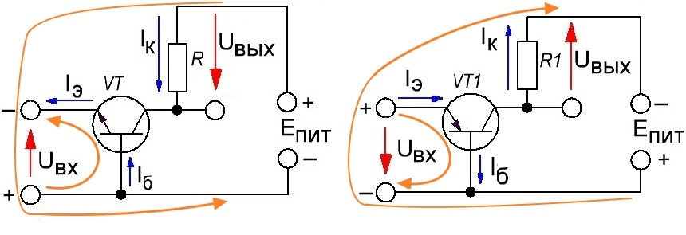
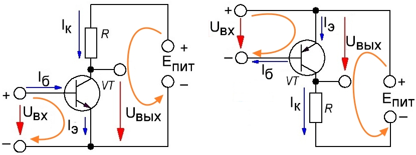
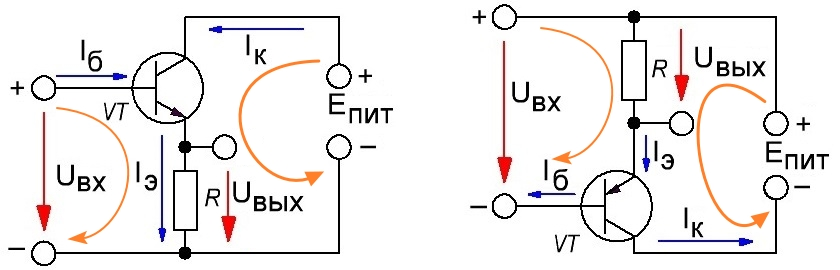

Схемы включения биполярного транзистора
В зависимости от того, куда мы подаём управляющий сигнал и откуда снимаем выходной сигнал (от того, какой электрод для этих сигналов является общим) выделяют 3 основных схемы включения биполярных транзисторов:
Схема с общей базой
В схеме, приведенной на рис. 1, электрическая цепь, образованная источником Uэб, эмиттером и базой транзистора, называется входной, а цепь, образованная источником Uкб, коллектором и базой этого же транзистора,— выходной. База является общим электродом транзистора для входной и выходной цепей, поэтому такое его включение называют схемой с общей базой, или сокращенно «схемой ОБ».

Рис. 1 - Включение транзистора по схеме с общей базой
Здесь входной ток - это ток эмиттера, входное напряжение - это напряжение на переходе база-эмиттер, выходной ток - ток коллектора, а выходное напряжение - это напряжение на включенной в цепь коллектора нагрузке. Для этой схемы:
Iвых≈ Iвх, т.к. Iк≈ Iэ,
Rвх = Uбэ/Iэ.
Cхема ОБ усиливает только напряжение и не усиливает ток. Сигнал по фазе не сдвигается.
Схема с общим эмиттером
На рис. 2 изображена схема, в которой общим электродом для входной и выходной цепей является эмиттер. Это схема включения с общим эмиттером, или сокращенно «схема ОЭ». В ней выходным током является ток коллектора Iк, незначительно отличающийся от тока эмиттера Iэ, а входным — ток базы Iб, значительно меньший, чем коллекторный ток.

Рис. 2 - Включение транзистора по схеме с общим эмиттером
Если считать, что входной ток - это ток базы, входное напряжение - это напряжение на переходе база-эмиттер, выходной ток - ток коллектора и выходное напряжение - это напряжение между коллектором и эмиттером, то можно записать, что:
Iвых/Iвх= Iк/Iб = β ,
Rвх= Uбэ/Iб.
Так как Uвых = Eпит - Iк·R, то видно, что, во-первых, выходное напряжение легко можно сделать гораздо выше входного, а во-вторых, что выходное напряжение инвертировано по отношению ко входному (когда Uбэ = Uвх увеличивается и входной ток растёт - выходной ток также растёт, но Uкэ=Uвых при этом уменьшается).
Схема ОЭ является наиболее распространённой, поскольку позволяет усилить как ток, так и напряжение, то есть позволяет получить максимальное усиление мощности. Эта дополнительная мощность у усиленного сигнала берётся от источника питания (Eпит), без которого транзистор ничего не сможет усилить и вообще никакого тока в выходной цепи не будет.
Связь между токами Iб и Iк в схеме ОЭ определяется уравнением:
Iк = h21э Iб+Iкэо.
Коэффициент пропорциональности h21э называют статическим коэффициентом передачи тока базы. Его можно выразить через статический коэффициент передачи тока эмиттера h21б.
Если h21б находится в пределах 0,9...0,998, соответствующие значения h21э будут в пределах 9...499.
Составляющая Iкэо называется обратным током коллектора в схеме ОЭ.
Схема с общим коллектором (эмиттерный повторитель)
На практике часто встречаются схемы, в которых общим электродом для входной и выходной цепей транзистора является коллектор (рис. 3). Это схема включения с общим коллектором, или «схема ОК».

Рис. 3 - Включение транзистора по схеме с общим коллектором
Здесь входной ток - это ток базы, а входное напряжение подключено к переходу БЭ транзистора и нагрузке, выходной ток - ток эмиттера, а выходное напряжение - это напряжение на включенной в цепь эмиттера нагрузке. Для этой схемы:
Iвых/Iвх= Iэ/Iб= (IК+IБ)/IБ= β + 1,
т.к. обычно коэффициент β достаточно большой, то иногда считают
Iвых/Iвх≈ β.
Rвх = Uбэ/Iб + R.
Uвых/Uвх = (Uбэ + Uвых)/Uвых≈ 1.
Как видим, такая схема (ОК) усиливает ток и не усиливает напряжение. Сигнал в данном случае по фазе не сдвигается. Кроме того, данная схема имеет самое большое входное сопротивление.
Оранжевыми стрелками на схемах показаны контура протекания токов, создаваемых источником питания выходной цепи (Епит) и самим входным сигналом (Uвх). В схеме с ОБ ток, создаваемый Eпит, протекает не только через транзистор, но и через источник усиливаемого сигнала, а в схеме с ОК, наоборот, - ток, создаваемый входным сигналом, протекает не только через транзистор, но и через нагрузку (по этим приметам можно легко отличить одну схему включения от другой).
Независимо от схемы включения транзистора для него всегда справедливо уравнение, связывающее токи его электродов:
Iэ = Iк + Iб.
Источники:
radiohlam.ru - О транзисторах «на пальцах». Часть 1. Биполярные транзисторы